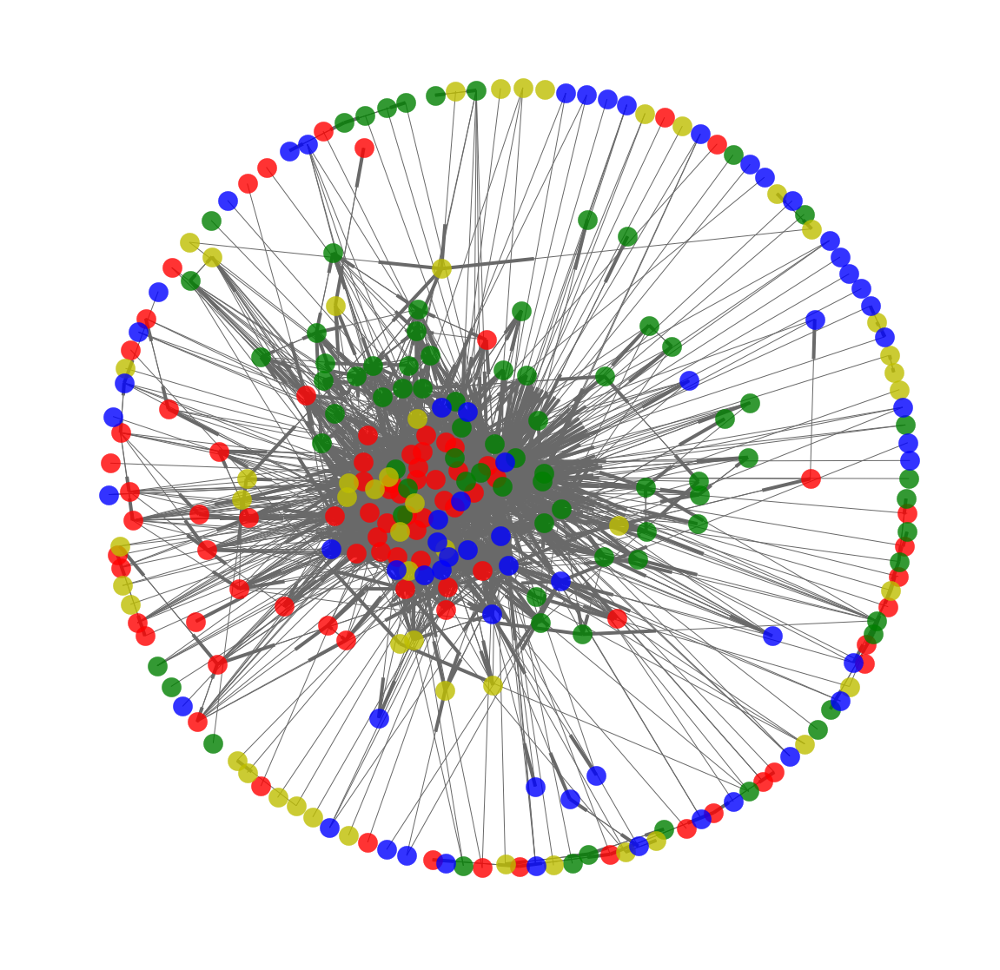

“It is our choices, Harry, that show what we truly are, far more than our abilities.” — Dumbledore, Harry Potter and the Chamber of Secrets
Let’s jump in the magic universe of Harry Potter! We have a lot of special characters that are waiting to be analysed! Which are the key characters? Which house is it better to belong to? Would you rather be a good or a bad guy? What are the most happy and dark moments in the books and movies? Stay tuned, because we will answer all these questions!
We chose this topic because we are big fans of Harry Potter and we are interested in using our python skills on something we are passionate about. We know the communities and the characters. We also remember crying, being scared and laughing a lot in our childhood while we were watching the movies or reading the books.
There is a big universe and a lot of data about Harry Potter. It was easy to find the books and the analysis seemed interesting. There are some words that are typical to Harry Potter such as the spells or locations. So, we could also analyse them. Creating a network in this universe made also a lot of sense to us.
The Network was created with the data from the wikia of Harry Potter.
We will create a link from node a to node b if the name of node b appears on the wikia page of node a.
This is the graph from which we have been working, each node is a character
“Harry - you're a great wizard, you know."— Hermione, Harry Potter and the Philosopher's Stone
In this section we are trying to find out which characters are the most central, more specifically the most important characters. For this we used different tools such as betweenness centrality, PageRank, eigenvector centrality (for in and out links) and the HITS algorithm (finds Hubs and Authorities). We thus use these different measures to be able to compare them and to see if indeed they capture the most important characters in our network. The tools are rather technical to explain, thus we have explained them in our notebook.
In the above graph one can see the results of the different measures, with respect to the maximum.
Harry Potter nearly always appears on top. He is just distanced by Ron on the Hubs and eigenvector centrality out. This is because Harry Potter has plenty of links linking to him, thus plenty of people know him. While proportionally Ron has more links linking to other characters (out links). Ron thus knows plenty of other characters, but he is not really well known by the others. This can be due to the fact that he is really close to Harry, this means he will know a lot of people that Harry knows, but then those people will have much more connections to Harry than to him. This happens when your best friend has 7 books and movies about him.
Both of the measures, Hubs and eigenvector centrality out, focus on the out links.
We notice that the top 5 characters (Harry Potter, Tom Riddle (Voldemort), Dumbledore, Ron and Hermione) in all the measures are the most important characters in the Harry Potter universe (or at least what we would have guessed).
The next 9 characters are all still important but more side characters in the Harry Potter universe. Except from Sirius Black they appear in most of the books.
Dolores Umbridge is more special. She is the headmaster of Hogwarts in book 5: “Harry Potter and the Order of the Phoenix”. Thus she is very important in book 5 but otherwise she only appears in book 7 for a minor role.
The last 5 characters of the plot represent less famous characters that only appear in one or two Harry Potter book. Some of the names were even not that familiar to us! We can thus take into consideration that betweenness centrality is a poor measure to find central nodes in this graph. In our view the best measure for this graph is PageRank that captures the first 10 characters in the plot.
Finally, we notice a big correlation between the eigenvector out centrality and the Hubs. The same yields for eigenvector in centrality and the Authorities.
THE COMMUNITES
COMMUNITY ANALYSIS
“"We are only as strong as we are united, as weak as we are divided." — Dumbledore, Harry Potter and the Goblet of Fire
We will use the Louvain algorithm to analyse the underlying communities in the Harry Potter network.
We have thus applied this algorithm to 2 different sets of communities. On the one hand we were interested in the 4 different houses of Hogwarts (Gryffindor, Slytherin, Ravenclaw and Hufflepuff), but on the other hand we were also interested in the interaction between the good and bad guys in Harry Potter. There is in Harry Potter one community of bad guys: the Death Eaters. Yes the name sounds horrible! But also several communities of good guys such as the Order of the Phoenix and the Army of Dumbledore. It seemed thus interesting to assess these two separated problems.
We do not know what exactly to expect. We could have 2 different scenarios. One scenario could be that characters interact a lot in there own House. Another scenario would be that there is a lot of interaction between the most famous characters regardless of their house or characteristics. The solution will probably be a blurry mix of these two scenarios.
Here is a plot of network with only the House members. Red nodes are Gryffindor nodes. Green nodes are Slytherin nodes. Yellow nodes are Hufflepuff nodes. Blue nodes are Ravenclaw nodes.

Confusion Matrix of the Houses
We notice in the center a higher density of Gryffindor nodes. This makes sense since in the Harry Potter universe, the main house, the house of Harry Potter, is Gryffindor.
We had a problem since not all of our nodes had a house or a good or bad label. We thus only kept the nodes that had such a label and the links between these nodes. We have plotted our results in a confusion matrix in order to make our results more visual.
The confusion matrix is a table to compare two different sets of non-overlapping communities.
A number in the square (with row i and column j), is the number of characters that are in both communities, the community corresponding to row i and the community corresponding to row j. We will use the confusion matrix to compare the communities that are naturally present in Harry Potter (houses, Good and Bad Guys) versus the communities found by the Louvain algorithm (these have no name and thus are just numbered).
In this figure the communites are visulized in a confusion matrix
This confusion matrix tells us that the categories of houses are not so good to distinguish the different communities. Indeed, most of the table entries have large values. The only community that is somewhat better captured is the slytherin house. On the one hand, we see that the community 3 we have a vast majority of Slytherins. This is also the case in community 6. On the other hand we distinguish communities 2 and 4 which has members of several different houses but only one from Slytherin. Why would Slytherin represent a better community? The explanation that we come up with is that this house has a great deal of bad guys, while the other houses have good guys as members.
Confusion Matrix of the Good and bad guys
A first observation here is that there are way more good than bad guys. This is because we took several different lists for the Good Guys : First Order of the Phoenix, Dumbledore's Army and the Order of the Phoenix allies. While we only had one interesting list for the bad Guys: the Death Eaters.
We see though that the distinction is pretty good! In the first community all but one are members of Dumbledore's Army and all of them are good guys. The 3rd community captures the vast majority of the Death Eaters. We notice that people who were in the frontline to fight against the death eaters such as Severus Snape, Neville’s parents or Sirius Black end up in this community also. The two remaining communities contain other good guys but it is harder to find a deep underlying structure.
You can find a plot of these communities below. The Death Eater community is in black, while the Good guys are in blue. Each number corresponds to the community found by the Louvain algorithm (column of the confusion matrix).
SENTIMENTAL ANALYSIS
SENTIMENTAL ANALYSIS
"Happiness can be found, even in the darkest of times, if one only remembers to turn on the light." —Dumbledore, Harry Potter and the Prisoner of Azkaban
The aim of the sentimental analysis is to understand better the good and bad feelings in the Harry Potter world. We want to discover if the books and the movies are telling the same sentimental story and find the darkest and happiest books.
Firstly, we are interested in the book's sentiments. We start with a deep understanding of the books page by page. The sentiment of the pages will guide our analysis.
How can a page have a feeling? We have a big list of super commonly used English words and a happiness grade for each one. The grade is based on the comparison and grading on average of the words taken from Twitter, Google Books (English), music lyrics (1960 to 2007), and the New York Times (1987 to 2007). Each word thus has a score. Then, the sentiment of a page will be the average of the sentiments of the words on each page.
Using some functions in Python, we have one plot for each movie with the sentiment profile of that book. A sentiment profile is a graph that has the sentiment on the y-axis and position in the text on the x-axis. The effect of changing the size of the sliding window is that it changes the amount of text we are taking in consideration. Starting with 15 words we capture the moving average of the sentiment of a few sentences. Increasing the window the moving average will say more about the whole book and can capture a more important flow. In a page there are usually around 500 words. Using one page as a window, it is possible to follow how the sentiment will change page by page.
The sentiment profile of the books is different: the maximum and minimum sentiment seem to be the same, but they behave differently. However, from book 5 the range is bigger, spreading in the negative emotion. This could be due to fact that the children that were reading the first 4 books have now grown older and can enjoy scarier, creepier and sader material.
There is no book which has a calm behavior around the average. All books, instead, have lot of up and downs with a jagged profile and sudden changes. This is what we expect from this series of books, where there are numerous very happy and sad events.
For instance in book 1, Harry meets for the first time Voldemort and this is really clear from the sentiment profile. However, there are also deeply sad moments like in book 2 when Harry is fighting Tom Riddle or in books 5 and 6 when respectively both Sirius Black and Dumbledore die. These moments are really clear in the sentiment profile with high and low peak.
We now take in consideration the subtitles of the 8 movies (book 7 was filmed in 2 parts). We want to visualize the sentiment profile in the movies, find the most sentimental moments. And then compare these moments with the one found in the books. Our goal is to find the difference between books and movies.
On average the saddest movies are Movie 1 and Movie 6, the happiest ones are Movie 8 (part 2 of book 7) and Movie 4. However, all the movies have negative average sentiment. But let’s take a look closer. In movie 1 “Harry Potter and the sorcerer’s stone” there is a super happy moment at 2:12:00. Now we want to double check in the movie which moment is it. This scene is when Harry, Ron, and Hermione play their way across a chessboard to pass the White players in a giant-scaled and dangerous game of Wizard Chess. In order for our heroes to pass, they have to play deadly moves as Harry, Ron, and Hermione are part of the Black pieces as a Bishop, Knight, and Rook. After Ron's sacrifice, there is a very sentimental speech between Harry and Hermione about true friendship and courage.
In movie 3 “The prisoner of Azkaban” the saddest moment in when Sirius Black ‘wants’ to kill Harry and Hermione proposes to sacrifice herself to protect Harry.
In movie 4 “Harry Potter and the goblet of fire” starts with the saddest moment when Harry has a nightmare about Voldemort killing a housekeeper. The saddest moment ever in all movies is in the last movie “Harry Potter deathly hallows part 2” at 1:02:00. The death eaters are conquering Hogwarts and on top of that Voldemort kills Snape. This moment has an average sentiment is -1 which is the lowest value in the Harry Potter movies.
Harry Potter fans, as we are, know that there is a world of difference between the magical books and their respective film adaptations. While the Potter movies are nostalgic and possess a special charm of their own, there is a huge amount of detail that doesn't translate from the page to the screen. What is clear from the sentiment profile is that both are built to leave the reader and watcher in the grey area because there are a lot emotional up and downs at the end of every books and movies. The most important events are present of course in both: in book 1 the second saddest moment is the chess game, which is also the saddest moment in movie 1. It’s possible to find a lot of parallels between them.
In conclusion, we found an efficient way to detect and investigate the sentiment profile in the books and movies. We double checked the most sentimental moments and the turning points of the books in the movies and vice versa. It allowed us to understand more about each movie’s structure and why these movies are so passionate.
WORD FREQUENCY
Spell analysis
"For in dreams we enter a world that is entirely our own. Let them swim in the deepest ocean or glide over the highest cloud." — Dumbledore, Harry Potter and the Prisoner of Azkaban
We now will perform a count of the different spells present in the book. One could ask the question what is this different from the wordcloud? The fact is that most spells are not present with high frequency in the books. However, they appear in crucial moments. Following a spell count can thus give us a rough and maybe more refined idea of what happened at intense moments in the books.
The frequency of each casted spell or curse was analyzed. In order to realize this we tokenized the books and then ran the frequency distribution function. Thereafter we matched the spell list excel sheet with each tokenized term count book. Tokenization is for lexical analysis, the process of classifying text into individual words based on a space delimiter. This resulted in the frequency of spells and curses demonstrated below in a bar plot.
We expected, given the nature of the story, that the frequency would increase as the universe became more complex with each year. This turned out to be the case.
In the first book only few spells are casted and two curses, Mortis and Mimblewimble
In the second book we already have more spells but a good example is the 6th book where a lot of spells are casted and many curses.
In book 3 we see that the most frequent spell is the expecto patronum. This is because it is the only spell that keeps away the dementors. Harry has to learn to master it because in this book there are plenty of dementors and Harry faints each time a dementor comes in contact with him.
In book 6 one can see then the horcrux curse is mentioned over 40 times. That is of no surprise since the plot of the books 6 and 7 is the search for the seven horcruxes that Voldemort divided his soul into and destroy them.
"Yes, I think so," said Dumbledore. "Without his
Horcruxes, Voldemort will be a mortal man with a
maimed and diminished soul. Never forget, though,
that while his soul may be damaged beyond repair,
his brain and his magical powers remain intact. It will
take uncommon skill and power to kill a wizard like
Voldemort even without his Horcruxes."
And finally we reach book 7 we can see that the search continues for the horcrux, appearing now over 80 times. Furthermore we now have the largest collection of spells and curses.
We also notice that the words ‘horcrux’ and ‘horcruxes’, as well as other words related to the horcruxes appear in the word cloud of books 6 and 7.
TF-IDF
Term frequency - inverse document frequency
We want to find the most representing words for each book and visualize them in a figure, a word cloud figure. In a word cloud figure the words differ is size based on how representing they are for a given book.
To realize this we utilize the TFIDF criterion:
TF: Term frequency, in each book see how often each word appears
IDF: Inverse document frequency, see how important this word is compared to its appearance in other books. In other words to see if a given frequent word also appears in the other books.
The result is a TFIDF matrix, in our case the rows are corresponding to the books and the columns to the words.
With this matrix we produce the seven word cloud figures, one for each book.
smelting : The school Dudley goes to
flamel: "Nicolas Flamel," she whispered dramatically, "is the only known maker of the Sorcerer's Stone!"
mom :Mrs. Weasley, Ron’s mother is often referred to in this book
Book 2
mason: Mrs. Mason is they lady harry blows up in the air in the beginning of the book. Resulting in a dramatic discussion whether he should be kicked out of Hogwarts or not.
Book 3
boggart :A boggart is an amortal shape-shifting non-being that takes on the form of the viewer's worst fear. The boggart was a big topic of this book since Harry's worst fear was a dementor at the time.
Pettigrew: Is introduce in this book and the reader is informed that he in fact has been Ron's rat
grindylow : A Grindylow is a small, horned, pale-green water demon and a Dark creature
hinkypunk :The Hinkypunk is a little one-legged creature and looks as if it is made of smoke
executioner: An executioner from the Ministry of Magic that is sent to kill Buckbeak, Buckbeak turns out to be too valuable for Harry and the crew so Hermione helps the crew to travel back in time and save Buckbeak.
From the 5 five most representing words of this book, 3 of them are creatures from Professor Remus Lupin Defence against the dark art class, namely the boggart,grindylow and hinkypunk.
Book 4
portkey: Is commonly used in this book. A portkey instantly brings anyone touching it to a specific location.
Bulgarian: This book features both the world cup in Quidditch and the competition around the Goblet of fire where the Bulgarian team plays a big role.
Karkaroff : Professor Karkaroff is the headmaster of Scandinavian magic school that the Bulgarian Viktor Krum attends.
Hostage: In the games of the goblet of fire then a hostage had to be saved
leprechaun: Are magical creature that appear in this book
Book 5
bowtruckle: Is a magical creature studied in the class care of magical creatures
Thestrals : Skeleton flying horses, they were used in this book to fly the Orders member disguised as harry to a safe spot
clipboard
umbridge: Dolores Jane Umbridge becomes a headmaster at Hogwards in this book replacing Dumbeldore.
Book 6
Not really a word that represents this book. Notice that ‘horcrux’ and ‘horcruxes’ appear at the top of the ‘H’ and the ‘P’ of the word cloud
Book 7
cattermole: Is the character that Ron is disguised as when the crew goes undercover into the ministry of magic.
xenophilius: He is the father of Luna Lovegood
carrow :Siblings that are both Death Eaters
deluminator : Albus Dumbledore's device which is used for taking out any light source and keeping them until bestowing them.
Peverell: the Peverell family was the original owners of the Hallows. Antioch: the Elder Wand, Cadmus: the Resurrection Stone, and Ignotus: the Cloak of Invisibility
CONCLUSION
Conclusion
“I love magic.” — Harry Potter, Harry Potter and the Goblet of Fire
We were happy to find some meaningful results with the different tools that we used. Some happy moments matched perfectly the books and the movies, some books had a lot of certain spells with a pretty obvious underlying reason. We also found some relevant communities with the Louvain algorithm.
We did our best to show these results in comprehensive plots, that were logical for non scientific people. So all in all, we think we have some nice and clear outputs.
If we could borrow Hermione’s Time-Turner,...
…. we could analyse more deeply our different communities or analyse some other communities in the huge Harry Potter universe.
…. we could analyse a lot of different sets of Harry Potter words, such as locations, objects, ...
…. we could improve the sentimental analysis by using the same tools to analyse the subtitles and the movies. This is not the case until now because of some technical issues.
Sources
Could you just add this sentence:
We took inspiration from the following links for the quotes and explanation of the Harry Potter scenes: